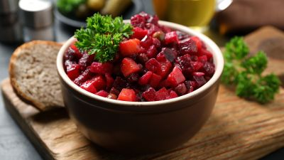

Betroot salad

| Ingredient |
Amount |
| Beetroot salad |
1 kg |
| Potatoe |
4 pcs |
| Beetroot |
1 pcs |
| Carrot |
4 pcs |
| Pickles |
3 pcs |
| Onion |
1 pcs |
| Salad dressing |
0,5-1 glass |
| Salt |
to taste |
- Step 1: Finely chop the greens
- Step 2: Prepare the dressing for the vinaigrette. To do this, mix sugar, salt, pepper, and vinegar. Add chopped greens and vegetable oil. Mix well, cover, and refrigerate for 1-2 hours.
- Step 3: Bring water to a boil in separate pots. In boiling salted water, add potatoes and carrots, and cook for approximately 25-30 minutes.
- Step 4: In another pot, add a little vinegar. Place beets in the boiling acidified water and cook for 30-40 minutes.
- Step 5: Pour cold water over the cooked vegetables, cool them, and peel. Dice the potatoes, beets, carrots, cabbage, and pickles.
- Step 6: Combine all the vegetables, add cabbage and beans, pour the vinaigrette dressing, and mix well.